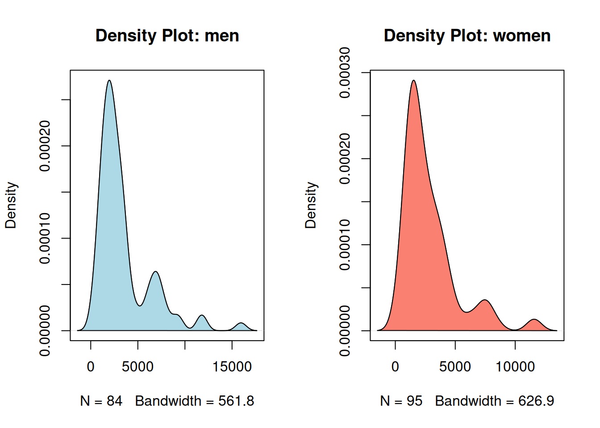
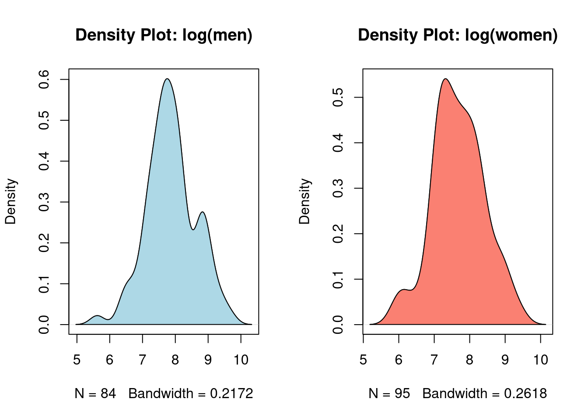

Before I dive into machine learning—because it’s a bottomless pit I should take my time when I do—I want to cover a bit more of the basics in inference.
In this post I mentioned that to perform the t-test for two independent samples, we should first know whether the variances of these samples are equal or different. Let’s see how to check this now. The dataset used will be the German credit data.
# importing data# note: -1 removes the first column, which is just the indexdata = readr::read_csv("german_credit_data.csv")[-1]
New names:
Rows: 1000 Columns: 10
── Column specification
──────────────────────────────────────────────────────── Delimiter: "," chr
(5): Sex, Housing, Saving accounts, Checking account, Purpose dbl (5): ...1,
Age, Job, Credit amount, Duration
ℹ Use `spec()` to retrieve the full column specification for this data. ℹ
Specify the column types or set `show_col_types = FALSE` to quiet this message.
• `` -> `...1`
# viewing dataprint(data)
# A tibble: 1,000 × 9
Age Sex Job Housing `Saving accounts` `Checking account`
<dbl> <chr> <dbl> <chr> <chr> <chr>
1 67 male 2 own <NA> little
2 22 female 2 own little moderate
3 49 male 1 own little <NA>
4 45 male 2 free little little
5 53 male 2 free little little
6 35 male 1 free <NA> <NA>
7 53 male 2 own quite rich <NA>
8 35 male 3 rent little moderate
9 61 male 1 own rich <NA>
10 28 male 3 own little moderate
# ℹ 990 more rows
# ℹ 3 more variables: `Credit amount` <dbl>, Duration <dbl>, Purpose <chr>
Just like the t-test, we can test whether the measure of a sample is significantly different from a chosen value or compare it to another sample—whether greater, smaller, or different. For this exercise, let’s test whether the variance of the Credit amount variable (credit limit) is the same for men and women who rent their homes. First, let’s calculate the population standard deviations:
We see that men’s credit limit has a standard deviation of DM$ 2,846, while women’s is DM$ 2,2351, which means men’s credit limits vary more around the mean than women’s. What we want to know now is whether this difference is statistically significant. Let’s proceed to the test!
1 THE TEST
The F test, among its various applications, is used together with the two-sample t-test—when it’s necessary to know whether the two sampled populations have the same variance or not.
It is also a parametric test, which means it assumes the populations are approximately normally distributed. Therefore, we must first ensure this assumption is met.
1.1 CHECKING THE NORMALITY ASSUMPTION
First, let’s plot the densities to check if their distribution is plausible under the normality assumption:
# density datad1 =density(men)d2 =density(women)# splitting the grid into 2 columnspar(mfrow =c(1,2))# visualizationplot(d1,main ="Density Plot: men")polygon(d1, col ="lightblue")plot(d2,main ="Density Plot: women")polygon(d2, col ="salmon")

With this shape, normality is quite implausible and there’s no need to perform any tests. To address this, we can try a logarithmic transformation:
# logarithmic transformationlog_men =log(men)log_women =log(women)# calculating variance after transformationvar(log_men)
[1] 0.5614271
var(log_women)
[1] 0.5229548
# density datad3 =density(log_men)d4 =density(log_women)# splitting the grid into 2 columnspar(mfrow =c(1,2))# visualizationplot(d3,main ="Density Plot: log(men)")polygon(d3, col ="lightblue")plot(d4,main ="Density Plot: log(women)")polygon(d4, col ="salmon")

The data now seem to follow a distribution close to normal. To check, we could perform a normality test, but since that’s not the topic here, we’ll explore it in another post. For now, let’s just note that the transformation was successful and the data now appear approximately normal.
# normality testshapiro.test(log_men)
Shapiro-Wilk normality test
data: log_men
W = 0.98624, p-value = 0.5147
shapiro.test(log_women)
Shapiro-Wilk normality test
data: log_women
W = 0.98171, p-value = 0.2071
The null hypothesis is that we cannot infer, at a certain significance level, that the variances are different. The alternative hypothesis is that they are significantly different.
1.3 SIGNIFICANCE LEVEL
\[ \alpha = 0.05 \]
We’ll use a standard significance level of 5%, which means the probability of rejecting the null hypothesis when it shouldn’t be rejected is only 5%. The lower this probability, the greater the difference between the variances must be for us to claim a significant difference.
1.4 TEST STATISTIC
\[ F = \frac{s^2_1}{s^2_2} \]
Since the test statistic is the ratio of the sample variances, the test checks whether this ratio is different from one. To check the tabulated statistic, we need to know the degrees of freedom in the samples:
# degrees of freedom (n-1)table(data[data$Housing =="rent",]$Sex)
female male
95 84
And then the tabulated statistic will be:
# F-statistic for the 95th percentileqf(.95, 83, 94)
Since the value 1.07 does not exceed 1.42, we cannot reject the null hypothesis at the 5% significance level. The variances are not significantly different.
2 THE F TEST IN R
In base R, the syntax for the test is very similar to the t-test:
F test to compare two variances
data: log_men and log_women
F = 1.0736, num df = 83, denom df = 94, p-value = 0.7362
alternative hypothesis: true ratio of variances is not equal to 1
95 percent confidence interval:
0.707196 1.638814
sample estimates:
ratio of variances
1.073567
The test summary tells us that to reject the null hypothesis at \(\alpha\) = 5%, the ratio should be around 1.64 (variance of log_men greater than log_women) or 0.70 (variance of log_men less than log_women). Alternatively, we could reject the null hypothesis if we increased \(\alpha\) to 1-0.7362 = 26.38%, which is a probability of making a type II error too high to be considered reasonable.